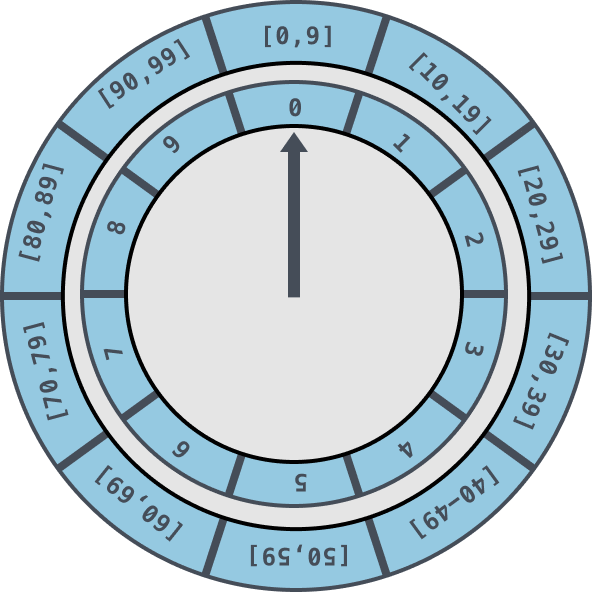

一个开源的时间轮算法介绍
文章目录
1. 回顾：简单的时间轮算法
这是我介绍时间轮算法第一篇文章：时间轮算法。本文会基于上一篇文章进行扩展，给出代码，解决一些问题。这也算是对第一篇文章的补坑。
希望读者朋友先阅读一下第一篇文章。
本节，先简要地分析一下简单时间轮算法有什么实现上的难点以及运行效率上的缺点。
利用优先队列+轮询线程的方式，能够实现一个定时任务框架。但时间复杂度并不优秀，优先队列通常基于 heap 实现，任务的入队以及出队的时间复杂度为 O(logN)。
通常而言，我们会认为 O(logN) 时间复杂度已经足够优秀，但是时间轮算法能够将定时任务的插入以及执行的时间复杂度降低到 O(1)。
在我的第一篇文章中提到一个假想的时间轮数据结构，如下图所示：

假设我们的任务需要在每天的 7:30:20 秒重复执行。任务首先添加于秒级别时钟轮的第 20 号刻度上，当其轮询线程访问到第 20 号刻度时，就将此任务转移到分钟级别时钟轮的第 30 号刻度上。当分钟级别的时钟轮线程访问到第 30 号刻度，就将此任务转移到小时级别时钟轮的第 7 号刻度上。当小时级别时钟轮线程访问到第 7 号刻度时，最终会将任务交给异步线程来负责执行，然后将任务再次注册到秒级别的时间轮中。
这种算法足够符合我们的直觉，也比较好理解。但是编程难度比较大，很难设计出符合要求的状态机。
这有点像 Paxos 与 Raft 的关系。Paxos 足够正确，但是较难实现。Raft 算法则易理解也容易编程实现。
简单的时间轮算法有如下 2 个主要缺陷。
1.代码编程难度大
我们试想一下上述三级的时间轮要如何实现。这里引入两个概念：tick 代表内层时间轮每一格的时间大小，这里设置为 1s。每层时间轮拥有的格子数定义为 wheelsize，这里设置为 60s。
- 最内层时间轮，每隔 tick 走一格
- 第二层时间轮，每隔 tick * wheelsize 走一格
- 第三层时间轮，每隔 tick * wheelsize * wheelsize 走一格
- …
你该如何控制每一层的时间轮的指针按时进行移动呢？
这里分层的时间控制逻辑，在实现上就相当复杂。
2.存在空轮询
对于每一层时间轮，每次时钟走到新格上，就需要查询该格上是否有任务队列需要被执行。如果时间轮上大多数格子没有任务，那么实际上就进行了没有必要的任务检查，这被称为空轮询。
能避免不断地基于时钟频率 tick 进行轮询吗？
答案是可以，但是我们又需要引入优先队列。下面通过分析一个开源时间轮实现，来看看一个可编程且足够简单的时间轮算法。
2. 一个开源的时间轮实现
Luo 同学开源了一个 Go 语言下的时间轮实现：
代码写得很漂亮，如果有 Go 语言基础，能够比较快速地理解其设计思想。
希望读者朋友结合原作者的文章，以及下文的分析，来看看该时间轮算法的核心设计思路。
2.1 单层时间轮

-
tickMs：时间轮的基本时间跨度，一个格子对应的时间长度，单位是多少个 Millisecond
-
wheelsize：时间轮的时间格个数
上图对应的时间轮个数为 10。
-
interval：单个时间轮能够表示的最长时间
interval = tickMs×wheelSize
-
currentTime：时间轮当前所处的时间，currentTime 指向的地方是表示到期的时间格，表示需要处理的时间格所对应的链表中的所有任务。
时间轮为什么不是 60 个格子？
秒、分、小时，这三个单位之间我们通常是以 60 进位来表示。但是国际单位制词头经常与秒结合以做更细微的划分，例如 ms（毫秒，千分之一秒）、µs（微秒，百万分之一秒）和 ns（纳秒，十亿分之一秒）。
时间轮 wheelsize 的大小决定了多少个进位，决定了时间轮是几进制。在时间上，我们通常会选择 10 进制或者 60 进制。
更多阅读：Wiki-秒
2.2 多层时间轮
为了避免一个时间轮上有过多格数，我们使用多层时间轮来解决问题。多层时间轮与单层时间轮有着同样的格数 wheelsize 大小，因为它们使用同样的进制。
下图为算法中的二层时间轮示例：

第二层每一格的时间跨度为第一层完整的时间跨度。例如，上图中的内层时间轮范围为 [0,9]，跨度为 10。外层的每一格，例如 [20,29] 以及 [90,99] 每一个格子就为 10，总的跨度为 10*10 = 100。
2.3 算法总体架构

上图是算法中介绍的总体架构，我们在这里说明一下。
首先，bucket 数据结构如下：
|
|
可见，bucket 代表具有相同过期时间的任务队列，timers 链表存储了多个过期时间相同的任务。
其次，DelayQueue 是一个优先队列，其内部每一个元素都是 bucket。以 Bucket 的到期时间作为优先级排序。
最后，每一个 bucket 对应某个时间轮上的一个格子，当其上有加入任务时，就会注册到优先队列中。
算法涉及两个主要的协程：
-
协程 1：负责从优先队列中获取到期的 bucket，如果没有到期的 bucket，那么其就会阻塞。其唤醒条件有两个：
- 优先队列中新加入 bucket
- 优先队列中有 bucket 到期
被唤醒后会在循环中继续尝试从优先队列中 poll 元素。
-
协程 2：负责处理被协程 1 poll 出已到期的 bucket，其会为 bucket 内的每一个 timer 启动一个协程来执行任务
协程 1 与协程 2 通过优先队列中的 channel C 来完成 bucket 的传递。
2.4 为什么是优先队列&时间轮的设计？
如果直接基于优先队列来实现定时任务，插入/取出元素的时间复杂度都是 O(logN)。为了优化时间复杂度，我们应当使用时间轮来实现定时任务。
但是为什么，在我们的时间轮设计中，还是有优先队列？
正如前两节所说，优先队列可以避免空轮询以及复杂状态的维护。
我们不必真的维护一个时间指针，在每次时刻变化时，就推进时间指针，然后检查时间轮对应格是否有任务需要被执行。
通过优先队列能够实现简单的阻塞语义。当 poll 协程发现优先队列中优先级最高的 bucket 需要在 x ms 后需要被处理时，协程可以主动休眠 x ms 后再去优先队列中拉取 bucket。同时，向优先队列添加新的 bucket 时，会重新唤醒负责从优先队列中 poll 出元素的协程。
另一方面，既然使用了优先队列，为什么还需要使用时间轮？时间轮的意义是什么？
直接使用优先队列就能够实现定时任务，但是时间复杂度为 O(logN)，使用时间轮主要能够基于 bucket 对同一过期时间的任务进行汇聚，这样能够降低时间复杂度。
我们假设，一共有 N 个任务需要被执行，如果直接基于优先队列，时间复杂度为 O(log~2~N)。
如果使用本文介绍的算法。假设 N 个任务最终被注册到 K 个 bucket 中（也就是有 k 个时间刻度有任务），优先队列上的时间复杂度为 O(logK)，而时间轮上的时间复杂度为 O(1)，因此最终时间复杂度为 O(logK*1) = O(logK)。
例如，如果有 1000,000 的定时任务需要被执行。时间轮被设计为三层，一共有 30 个 bucket。那么算法效率之比为：
可见，为优先队列引入时间轮的目的在于提高算法的执行效率。代价则是时间轮引入了额外的设计复杂度。
3. 总结
本文我们回顾了我在 时间轮算法 中介绍的时间轮算法思想，其在思想上足够简单直观，但有如下两个主要缺点：
- 算法实现复杂度比较大
- 存在空轮询问题，执行效率不高
然后在第二节介绍了时间轮结合优先队列的算法，并介绍了采用这种数据结构的原因。
关于该时间轮算法的基本设计思路，可以更多地参考博客原文：Go 语言中时间轮的实现，本文更多地在说明为什么这么设计，具体的设计细节可以参考原博客。